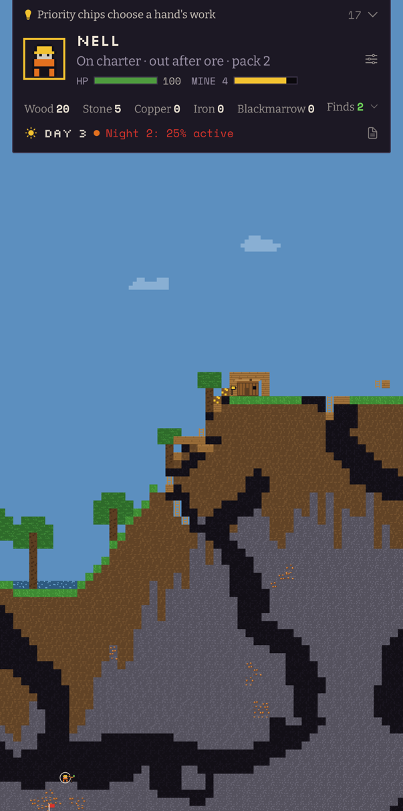
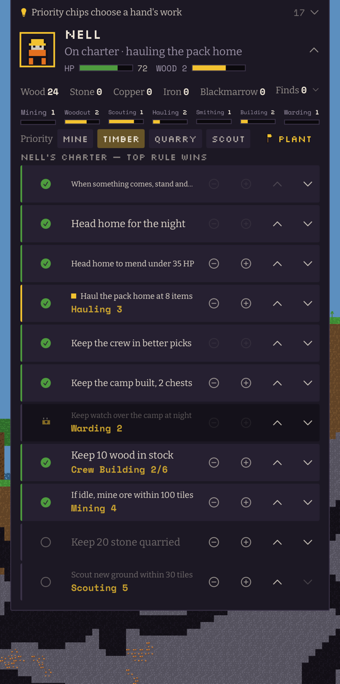
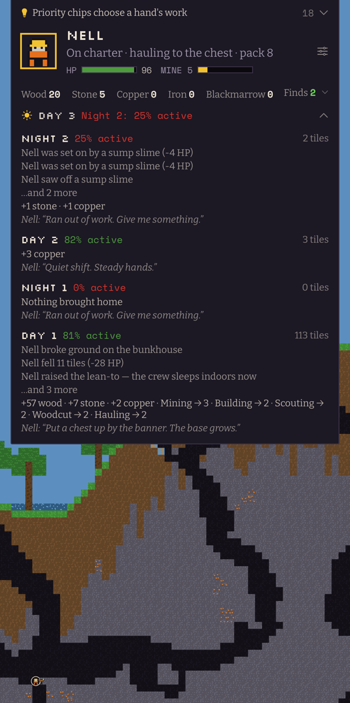
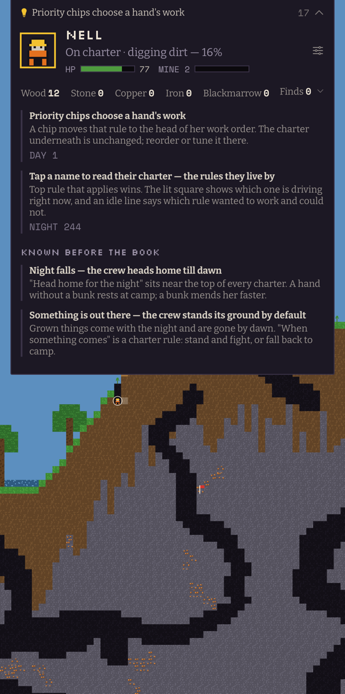
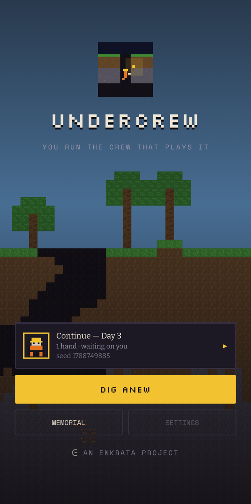

The depth of a world-sim. The interaction model of a coach.

A deep 2D sandbox world — mining, crafting, building, the full tunnel-by-tunnel progression — that you never directly play. Your crew of agents digs the tunnels, fells the timber, and hauls the ore. You write their standing orders, read their shift reports, and make the risk calls. When the crew mines a tunnel, the tunnel exists; zoom in and watch.
No virtual joystick. No energy meters. The grind is real — it is just not yours any more.
Every crewhand carries a charter: a short list of standing rules, read from the top, first one that applies wins. Keep ten wood in stock. Head home to mend under 35 health. If idle, mine ore within a hundred tiles. Rules unlock as she earns the skill to hold them, and the one that is driving her right now is lit on the row, so you can always see why she is doing what she is doing.
You do not pilot anyone. You decide what the crew is for, and then you find out whether you were right.




Undercrew is in early testing on TestFlight for iPhone. It is a young game, changing week by week — the crew appreciates patient testers with opinions.
Testing is invitation-only for the moment. Email kevin@poshsocialfl.com and I will send you a TestFlight invite.
Four dens hold a person. Every machine in the deep now has somebody on its books — a builder, a woodcutter, a deep-seam miner, a warder. Reaching her is not enough: the machine is what holds her, and breaking it is what frees her. The crew reaches eight.
The foreman keeps a book. Every tip the game has ever shown you is written down and readable, with a second sentence the one-line slot never had room for. The night watch became something a crewhand can actually stand.
The approach. Brass crawlers hold the workings above a den at any hour, and a Winder wound them. Killing them is not the answer; finding what is making them is.
Water, and the first machine. Ponds settle into dips and pools sit on cave floors; deep water breaks a fall. Something 157 tiles down began breathing firedamp on a schedule.
Gear, and something in the dark. Finds get names and effects, and you decide who carries them. Nights stopped being empty.
Questions, bugs, or thoughts: email kevin@poshsocialfl.com, or use the feedback button inside TestFlight.